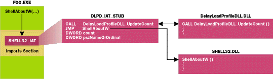

//==========================================
// Matt Pietrek
// Microsoft Systems Journal, February 2000
// FILE: DelayLoadProfileDLL.CPP
//==========================================
#define WIN32_LEAN_AND_MEAN
#include <windows.h>
#include <stdio.h>
#include "DelayLoadProfileDLL.H"
//===========================================================================
BOOL WINAPI DllMain(
HINSTANCE hinstDLL, // handle to DLL module
DWORD fdwReason, // reason for calling function
LPVOID lpvReserved) // reserved
{
if ( fdwReason == DLL_PROCESS_ATTACH ) // When initializing....
{
// We don't need thread notifications for what we're doing. Thus, get
// rid of them, thereby eliminating some of the overhead of this DLL
DisableThreadLibraryCalls( hinstDLL );
return PrepareToProfile();
}
else if ( fdwReason == DLL_PROCESS_DETACH ) // When shutting down...
{
ReportProfileResults();
}
return TRUE;
}
//===========================================================================
// Top level routine to find the EXE's imports, and redirect them
bool PrepareToProfile( void )
{
HMODULE hModEXE = GetModuleHandle( 0 );
PIMAGE_NT_HEADERS pExeNTHdr = PEHeaderFromHModule( hModEXE );
if ( !pExeNTHdr )
return false;
DWORD importRVA = pExeNTHdr->OptionalHeader.DataDirectory
[IMAGE_DIRECTORY_ENTRY_IMPORT].VirtualAddress;
if ( !importRVA )
return false;
// Convert imports RVA to a usable pointer
PIMAGE_IMPORT_DESCRIPTOR pImportDesc = MakePtr( PIMAGE_IMPORT_DESCRIPTOR,
hModEXE, importRVA );
// Save off imports address in a global for later use
g_pFirstImportDesc = pImportDesc;
// Iterate through each import descriptor, and redirect if appropriate
while ( pImportDesc->FirstThunk )
{
PSTR pszImportModuleName = MakePtr( PSTR, hModEXE, pImportDesc->Name);
if ( IsModuleOKToHook(pszImportModuleName) )
{
RedirectIAT( pImportDesc, (PVOID)hModEXE );
}
pImportDesc++; // Advance to next import descriptor
}
return true;
}
//===========================================================================
// Called at shutdown time. Locates and scans through the stubs we build to
// see how many times each imported DLL was called.
bool ReportProfileResults( void )
{
HMODULE hModEXE = GetModuleHandle( 0 );
PIMAGE_IMPORT_DESCRIPTOR pImportDesc = g_pFirstImportDesc;
// Iterate through each import descriptor
while ( pImportDesc->FirstThunk )
{
PSTR pszImportModuleName = MakePtr(PSTR, hModEXE, pImportDesc->Name);
// If we haven't hooked it, move on to the next import. Otherwise,
// go report the calls made to the DLL
if ( !IsModuleOKToHook(pszImportModuleName) )
{
pImportDesc++;
continue;
}
// Get address stored in the first IAT entry for this DLL
PIMAGE_THUNK_DATA pIAT = MakePtr( PIMAGE_THUNK_DATA, hModEXE,
pImportDesc->FirstThunk);
// The above address *probably* points at one of our redirected stubs
DLPD_IAT_STUB * pDLPDStub = (DLPD_IAT_STUB *)pIAT->u1.Function;
// Make sure we're pointing at our redirected stubs. If not,
// spit out a warning and move on
if ( (pDLPDStub->instr_CALL !=0xE8) || (pDLPDStub->instr_JMP !=0xE9))
{
char szOutBuffer[MAX_PATH * 2];
sprintf( szOutBuffer, "DelayLoadProfile: %s was not hooked",
pszImportModuleName );
OutputDebugString( szOutBuffer );
pImportDesc++;
continue;
}
DWORD nCalls = 0; // Set initial count to 0
// Iterate through each of our stubs, tallying up the calls
while ( pDLPDStub->pszNameOrOrdinal )
{
nCalls += pDLPDStub->count;
pDLPDStub++; // Advance to next stub
}
// Format the results and send to the debugger (DelayLoadProfile.EXE)
char szOutBuffer[512];
sprintf(szOutBuffer, "DelayLoadProfile: %s was called %u times",
pszImportModuleName, nCalls );
OutputDebugString( szOutBuffer );
pImportDesc++; // Advance to next imported DLL
}
return true;
}
//===========================================================================
// Builds stubs for and redirects the IAT for one DLL (pImportDesc)
bool RedirectIAT( PIMAGE_IMPORT_DESCRIPTOR pImportDesc, PVOID pBaseLoadAddr )
{
PIMAGE_THUNK_DATA pIAT; // Ptr to import address table
PIMAGE_THUNK_DATA pINT; // Ptr to import names table
PIMAGE_THUNK_DATA pIteratingIAT;
// Figure out which OS platform we're on
OSVERSIONINFO osvi;
osvi.dwOSVersionInfoSize = sizeof(osvi);
GetVersionEx( &osvi );
// If no import names table, we can't redirect this, so bail
if ( pImportDesc->OriginalFirstThunk == 0 )
return false;
pIAT = MakePtr(PIMAGE_THUNK_DATA, pBaseLoadAddr, pImportDesc->FirstThunk);
pINT = MakePtr( PIMAGE_THUNK_DATA, pBaseLoadAddr,
pImportDesc->OriginalFirstThunk );
// Count how many entries there are in this IAT. Array is 0 terminated
pIteratingIAT = pIAT;
unsigned cFuncs = 0;
while ( pIteratingIAT->u1.Function )
{
cFuncs++;
pIteratingIAT++;
}
if ( cFuncs == 0 ) // If no imported functions, we're done!
return false;
// These next few lines ensure that we'll be able to modify the IAT,
// which is often in a read-only section in the EXE.
DWORD flOldProtect, flNewProtect, flDontCare;
MEMORY_BASIC_INFORMATION mbi;
// Get the current protection attributes
VirtualQuery( pIAT, &mbi, sizeof(mbi) );
// remove ReadOnly and ExecuteRead attributes, add on ReadWrite flag
flNewProtect = mbi.Protect;
flNewProtect &= ~(PAGE_READONLY | PAGE_EXECUTE_READ);
flNewProtect |= (PAGE_READWRITE);
if ( !VirtualProtect( pIAT, sizeof(PVOID) * cFuncs,
flNewProtect, &flOldProtect) )
{
return false;
}
// Allocate memory for the redirection stubs. Make one extra stub at the
// end to be a sentinel
DLPD_IAT_STUB * pStubs = new DLPD_IAT_STUB[ cFuncs + 1];
if ( !pStubs )
return false;
// Scan through the IAT, completing the stubs and redirecting the IAT
// entries to point to the stubs
pIteratingIAT = pIAT;
while ( pIteratingIAT->u1.Function )
{
pStubs->data_call = (DWORD_PTR)DelayLoadProfileDLL_UpdateCount
- (DWORD_PTR)&pStubs->instr_JMP;
pStubs->data_JMP = *(PDWORD)pIteratingIAT - (DWORD_PTR)&pStubs->count;
// Technically, we don't absolutely need the pszNameOrOrdinal field,
// but it's nice to have. It also serves as a useful sentinel value.
if ( IMAGE_SNAP_BY_ORDINAL(pINT->u1.Ordinal) ) // import by ordinal
{
pStubs->pszNameOrOrdinal = pINT->u1.Ordinal;
}
else // It's imported by name
{
PIMAGE_IMPORT_BY_NAME pImportName = MakePtr(PIMAGE_IMPORT_BY_NAME,
pBaseLoadAddr,
pINT->u1.AddressOfData );
pStubs->pszNameOrOrdinal = (DWORD)&pImportName->Name;
}
// Cheez-o hack to see if what we're importing is code or data.
// If it's code, we shouldn't be able to write to it
if ( IsBadWritePtr( (PVOID)pIteratingIAT->u1.Function, 1 ) )
{
pIteratingIAT->u1.Function = (DWORD)pStubs;
}
else if ( osvi.dwPlatformId == VER_PLATFORM_WIN32_WINDOWS )
{
// Special hack for Win9x, which builds stubs for imported
// functions in system DLLs (Loaded above 2GB). These stubs are
// writeable, so we have to explicitly check for this case
if ( pIteratingIAT->u1.Function > 0x80000000 )
pIteratingIAT->u1.Function = (DWORD)pStubs;
}
pStubs++; // Advance to next stub
pIteratingIAT++; // Advance to next IAT entry
pINT++; // Advance to next INT entry
}
pStubs->pszNameOrOrdinal = 0; // Final stub is a sentinel
// Put the page attributes back the way they were.
VirtualProtect( pIAT, sizeof(PVOID) * cFuncs, flOldProtect, &flDontCare);
return true;
}
//===========================================================================
// Called from the DLPD_IAT_STUB stubs. Increments "count" field of the stub
void DelayLoadProfileDLL_UpdateCount( PVOID dummy )
{
__asm pushad // Save all general-purpose registers
// Get return address, then subtract 5 (size of a CALL X instruction)
// The result points at a DLPD_IAT_STUB
// pointer math! &dummy-1 really subtracts sizeof(PVOID)
PDWORD pRetAddr = (PDWORD)(&dummy - 1);
DLPD_IAT_STUB * pDLPDStub = (DLPD_IAT_STUB *)(*pRetAddr - 5);
pDLPDStub->count++;
#if 0
// Remove the above conditional to get a cheezy API trace from
// the loader process. It's slow!
if ( !IMAGE_SNAP_BY_ORDINAL( pDLPDStub->pszNameOrOrdinal) )
OutputDebugString( (PSTR)pDLPDStub->pszNameOrOrdinal );
#endif
__asm popad // Restore all general-purpose registers
}
•
•
•
//===========================================================================
// Add any DLLs here that you don't want this DLL to redirect
bool IsModuleOKToHook( PSTR pszModule )
{
if ( 0 == lstrcmpi( pszModule, "KERNEL32.DLL" ) )
return false;
if ( 0 == lstrcmpi( pszModule, "MFC42U.DLL" ) )
return false;
if ( 0 == lstrcmpi( pszModule, "MFC42.DLL" ) )
return false;
return true;
}
Figure 2 Redirecting the IAT to Stubs
 |
Figure 3 Excepts from DebugInjector.CPP
//==========================================
// Matt Pietrek
// Microsoft Systems Journal, February 2000
// FILE: DebugInjector.CPP
//==========================================
#include "stdafx.h"
#include <stdio.h>
#include <malloc.h>
#include <stddef.h>
#include "DebugInjector.h"
static PSTR s_arszDebugEventTypes[] =
{
"",
"EXCEPTION",
"CREATE_THREAD",
"CREATE_PROCESS",
"EXIT_THREAD",
"EXIT_PROCESS",
"LOAD_DLL",
"UNLOAD_DLL",
"OUTPUT_DEBUG_STRING",
"RIP",
};
//////////////////////////////////////////////////////////////////////
// Construction/Destruction
//////////////////////////////////////////////////////////////////////
•
•
•
bool CDebugInjector::LoadProcess( PSTR pszCmdLine )
{
STARTUPINFO startupInfo;
memset(&startupInfo, 0, sizeof(startupInfo));
startupInfo.cb = sizeof(startupInfo);
BOOL bCreateProcessRetValue;
bCreateProcessRetValue =
CreateProcess(
0, // lpszImageName
pszCmdLine, // lpszCommandLine
0, // lpsaProcess
0, // lpsaThread
FALSE, // fInheritHandles
DEBUG_ONLY_THIS_PROCESS, // fdwCreate
0, // lpvEnvironment
0, // lpszCurDir
&startupInfo, // lpsiStartupInfo
&m_ProcessInformation ); // lppiProcInfo
return bCreateProcessRetValue != FALSE;
}
•
•
•
//===================================================================
bool CDebugInjector::Run( void )
{
DEBUG_EVENT dbgEvent;
DWORD dwContinueStatus;
// The debug loop. Runs until the debuggee terminates
while ( 1 )
{
WaitForDebugEvent(&dbgEvent, INFINITE);
dwContinueStatus = HandleDebugEvent( dbgEvent );
if ( dbgEvent.dwDebugEventCode == EXIT_PROCESS_DEBUG_EVENT )
break;
ContinueDebugEvent( dbgEvent.dwProcessId,
dbgEvent.dwThreadId,
dwContinueStatus );
}
return true;
}
•
•
•
//===================================================================
DWORD CDebugInjector::HandleException(DEBUG_EVENT &dbgEvent )
{
EXCEPTION_RECORD & exceptRec = dbgEvent.u.Exception.ExceptionRecord;
// If this is a second chance exception, the debugee is going to
// die. Spit out the exception code and address
if ( dbgEvent.u.Exception.dwFirstChance == FALSE )
{
printf( "Exception code: %X Addr: %08X\r\n",
exceptRec.ExceptionCode, exceptRec.ExceptionAddress );
}
// If we've gone through the mechanics of injection already, just
// pass the exception on to the debugee
if ( m_bInjected )
return DBG_EXCEPTION_NOT_HANDLED;
// If it isn't a breakpoint, we don't want to know about it.
if ( exceptRec.ExceptionCode != EXCEPTION_BREAKPOINT )
return DBG_EXCEPTION_NOT_HANDLED;
static bool s_bFirstBP = FALSE;
DWORD dwContinueStatus = DBG_CONTINUE;
// Is this the DebugBreak breakpoint?
if ( s_bFirstBP == false )
{
SetEntryPointBP();
s_bFirstBP = true;
}
// Is this the breakpoint we set at the EXE's entry point?
else if ( exceptRec.ExceptionAddress == m_pExeEntryPoint )
{
RemoveEntryPointBP();
SaveEntryPointContext( dbgEvent );
PlaceInjectionStub();
}
// Is this the BP immediately after our LoadLibrary call?
else if ( exceptRec.ExceptionAddress == m_pStubInTargetBP )
{
RestoreEntryPointContext();
m_bInjected = true;
}
return dwContinueStatus;
}
•
•
•
//===================================================================
bool CDebugInjector::PlaceInjectionStub( void )
{
//=====================================================
// Locate where the stub will be in the target process
m_pStubInTarget = (LOADLIBRARY_STUB*)GetMemoryForLoadLibraryStub();
if ( !m_pStubInTarget )
return false;
m_pStubInTargetBP = (PBYTE)m_pStubInTarget +
offsetof(LOADLIBRARY_STUB, instr_INT_3);
//=====================================================
// Complete the stub fields that can't be preinitialized
strcpy( m_stub.data_DllName, m_pszDLLToInject );
m_stub.operand_PUSH_value = (DWORD)m_pStubInTarget
+ offsetof( LOADLIBRARY_STUB, data_DllName);
m_stub.operand_MOV_EAX =
(DWORD)GetProcAddress(GetModuleHandle("KERNEL32.DLL"),"LoadLibraryA");
//=====================================================
// Copy the stub into the target process
bool retValue;
retValue = WriteTargetMemory(m_pStubInTarget, &m_stub,sizeof(m_stub));
if ( !retValue )
return false;
//=====================================================
// Change the EIP register in the target thread to point
// at the stub we just copied in.
CONTEXT stubContext = m_originalThreadContext;
stubContext.Eip = (DWORD)m_pStubInTarget;
SetThreadContext( m_CreateProcessDebugInfo.hThread, &stubContext );
return true;
}
•
•
•